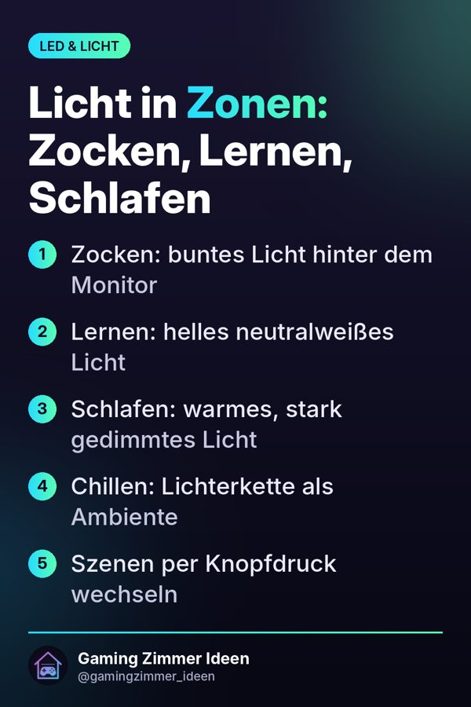

Ideen › LED Beleuchtung Gaming Zimmer
Licht in Zonen planen: So passt die Beleuchtung zum Zocken, Lernen und Schlafen

Ein Zimmer, viele Aufgaben: Plane dein Licht in Zonen. Buntes Licht hinter dem Monitor zum Zocken, helles neutralweißes Licht zum Lernen, warmes gedimmtes Licht zum Schlafen und eine Lichterkette zum Chillen. Mit gespeicherten Szenen wechselst du per Knopfdruck. Jetzt merken!
Auf einen Blick
- Zocken: buntes Licht hinter dem Monitor
- Lernen: helles neutralweißes Licht
- Schlafen: warmes, stark gedimmtes Licht
- Chillen: Lichterkette als Ambiente
- Szenen per Knopfdruck wechseln